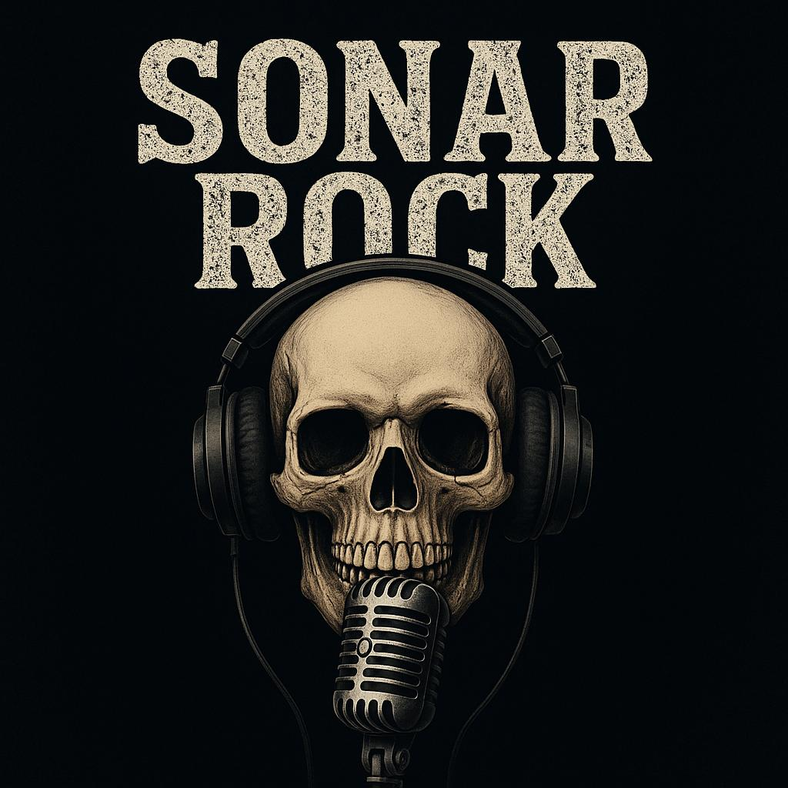
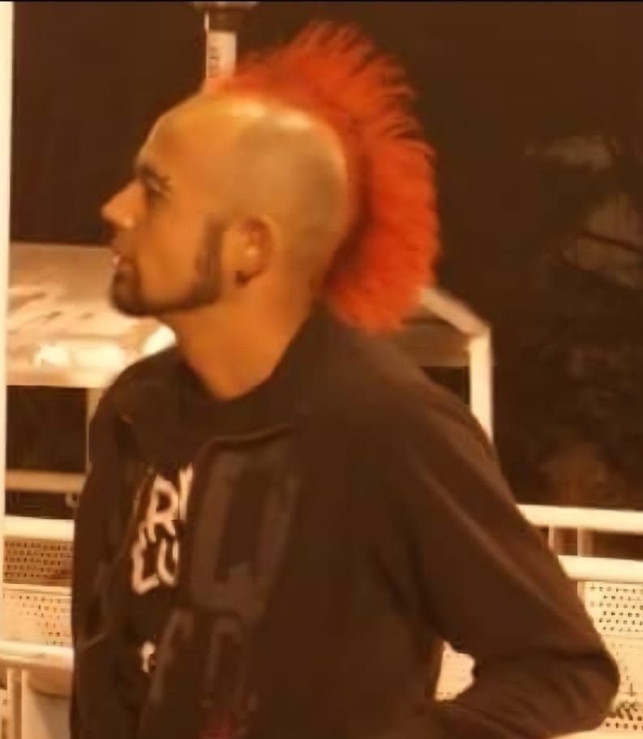
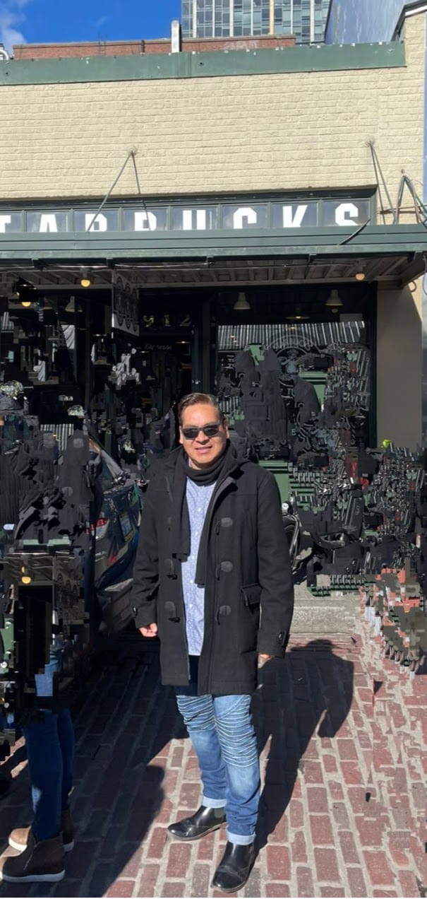

Transmitiendo ahora
Transmitiendo rock sin concesiones
Señal lista
Listo para reproducir
🔊

Transmitiendo ahora
Señal lista

Nombre del Artista



Sonar Rock es una trinchera sonora, un espacio libre y apasionado que nace en Guadalajara, Jalisco, México. Nuestra misión es simple pero poderosa: abrir un foro auténtico para las bandas emergentes, apoyar la escena local y mantener viva la esencia del rock en todas sus vertientes. Creemos en la fuerza de la música como motor de cambio, como punto de encuentro y como refugio de quienes buscan algo distinto a lo convencional. En Sonar Rock somos más que una radio: somos comunidad, resistencia y pasión por el sonido que nos une.
Sonar Rock celebra la esencia eterna del rock n’ roll: Su rebeldía frente a lo establecido. Su poesía en cada letra y acorde. Su energía que enciende escenarios y corazones. Su capacidad de conectar almas más allá de fronteras y generaciones. Aquí el rock no se escucha de fondo, se vive. Somos un canal donde conviven lo clásico, lo alternativo y lo emergente, siempre con la autenticidad como bandera.